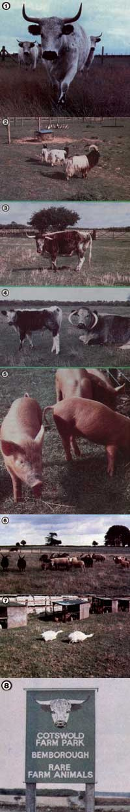

[1] Chartley Park white cattle date from the time of Britain's Roman occupation. [2] Bagot goats and Indian Runner ducks. [3] The Texas Longhorn had ancestors like this. [4] Some strange-looking livestock varieties have been preserved in zoos. [5] A group of healthy ""obsolete"" pigs. [6] These species (which include the Hebridean, Merino, Norfolk horn, Wiltshire Horn, Portland, Orkney, White-faced-Woodland, Jacob, Southdown, and Herdwick sheep) nearly died out in England. [7] Two Sevastapol geese. [8] Paying visitors help finance endangered liverstock parks.